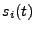
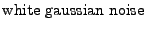
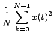
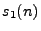

Next: Finding the Delay Up: Delay-and-Sum
Beamforming Previous: Basic Idea Contents
What kind of results can we expect from a delay-and-sum beamformer?
For now we'll assume that the source angle is known and we can
delay the signals without any error. First some definitions:
|  |
|
|
|
|
|
 |
|
|
|
 |
|
 |
|
|
|
Now put into the average power
definition. Then,
If we delay  so that
, then we get
.
Repeat the above procedure with the noise and expand.
The time-averaged cross-correlation,
, is zero for noise.
Then,
.
And
And in general, for M microphones, we get M times the SNR [MIK]. For the Signal to Interference Ratio
(SIR), the cross-correlation term will take a value between zero
and the interference power. So the array SIR will be better than
the one element microphone SIR and worse than M times the SIR for
one microphone.
Next: Finding the Delay Up: Delay-and-Sum
Beamforming Previous: Basic Idea Contents
Todd A Goldfinger 2004-11-22